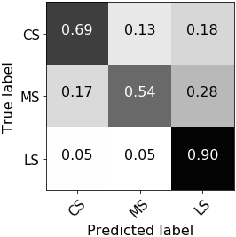
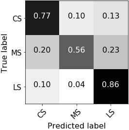
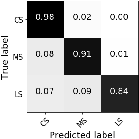

Shot Scale Recognition
What is the aim?
We propose to use Convolutional Neural Networks for the automatic classification of shot scale for investigating the relationship between shot scale computed of large movie corpora and the viewers’ emotional involvement. To demonstrate the utility of shot scale, we show how to perform automatic attribution of movie’s authorship by the statistical analysis of shot scale, when combined with shot duration. Then, we measure how shot scale affects both lower and higher complexity responses in viewers, relating shot scales to viewers’ rating on film mood and narrative engagement.
Paper on shot scale recognition Paper on movie’s authorship Paper on film mood, and narrative engagement
Dataset
We collect a large dataset of shot frames (792K, with an average of 6389 frames) from the full filmographies by six different authors (Scorsese, Godard, Tarr, Fellini, Antonioni, and Bergman) for a total number of 124 movies. Each frame, extracted at 1 frame per second, is annotated with its shot scale using the following categories: Extreme Close Up (ECU), Close Up (CU), Medium Close Up (MCU), Medium Shot (MS), Medium Long Shot (MLS), Long Shot (LS), Extreme Long Shot (ELS), Foreground Shot (FS), and Insert Shots (IS).
Two independent coders code the 124 movies and a third person checks their coding and makes decisions in cases of disagreement. The inter-rater reliability of ratings is computed, obtaining a Fleiss’ Kappa index of agreement between the annotations of 0.64, which indicates sufficient inter-rater agreement (95% confidence interval: 0.635-0.643).
Below a list of each field in the annotation file ({$year}_{$director}_-_{$title}.csv), with explanations where relevant
Scheme (click to open)
| Attribute | Description |
|---|---|
| time | Time from the movie beginning |
| shotscale | Shot scale class, see next table |
| Code | Abbreviation | Class |
|---|---|---|
| 0 | FS | Foreground Shot |
| 1 | ECU | Extreme Close Up |
| 2 | CU | Close Up |
| 3 | MCU | Medium Close Up |
| 4 | MS | Medium Shot |
| 5 | MLS | Medium Long Shot |
| 6 | LS | Long Shot |
| 7 | ELS | Extreme Long Shot |
| 8 | IS | Insert Shots |
| 9 | NA | Not available |
Get the data
Please read the Research Use Agreement provided below. Once you register to download the CineScale Dataset, you will receive a link to the download over email. It is forbidden to share the link to download the dataset with others."CineScale Dataset" Research Use AgreementPremise: the CineScale project involves a set of activities aiming at AI-driven interpretation of cinematic data. The research activities are conducted by a joint project team (JPT) belonging to the Department of Information Engineering (DII) of the University of Brescia, Brescia, Italy (UniBS) and ELTE department of Art Theory and Communication, Bupapest, Hungary (ELTE). The "CineScale Dataset" is a collection of images and related data and metadata that is made accessible for Research use only, starting from this website and after acceptance of the following terms of use. By registering for downloads, you are agreeing to this: 1. Permission is granted to view and use the "CineScale Dataset" without charge for research purposes only. Its sale is prohibited. Any non-academic research use need to be evaluated case by case by the JPT. If you intend to use this dataset for any non-academic research use, you need to communicate it describing the intended use and receive approval by the JPT. 2. In agreement with the mission of UniBS and ELTE to promote the publication of scientific knowledge as open data, any computational model or algorithm that have used the "CineScale Dataset" and is publicly referenced (e.g. in a publication etc..) is suggested to be shared including the code and model weights and any case will give appropriate credit by correctly citing the CineScale project scientific papers, but not in any way that suggests that ELTE and/or UniBS endorses you or your use. 3. Other than the rights granted herein, ELTE and UNIBS retains all rights, title, and interest in the "CineScale Dataset". 4. You may make a verbatim copy of the "CineScale Dataset" for uses as permitted in this Research Use Agreement. If another user within your organization wishes to use the "CineScale Dataset", they must comply with all the terms of this Research Use Agreement. 5. YOU MAY NOT DISTRIBUTE, PUBLISH, OR REPRODUCE A COPY of any portion or all of the "CineScale Dataset" to others without specific prior written permission from the JPT. 6. You must not modify, reverse engineer, decompile, or create derivative works from the "CineScale Dataset". You must not remove or alter any copyright or other proprietary notices in the "CineScale Dataset". 7. THE "CineScale Dataset" IS PROVIDED «AS IS,» AND UNIBS AND ELTE DO NOT MAKE ANY WARRANTY, EXPRESS OR IMPLIED, INCLUDING BUT NOT LIMITED TO WARRANTIES OF MERCHANTABILITY AND FITNESS FOR A PARTICULAR PURPOSE, NOR DO THEY ASSUME ANY LIABILITY OR RESPONSIBILITY FOR THE USE OF THIS "CineScale Dataset". 8. Any violation of this Research Use Agreement or other impermissible use shall be grounds for immediate termination of use of this "CineScale Dataset". In the event that ELTE or UniBS determines that the recipient has violated this Research Use Agreement or other impermissible use has been made, they may direct that the undersigned data recipient immediately return all copies of the "CineScale Dataset" and retain no copies thereof even if you did not cause the violation or impermissible use. 9. You agree to indemnify and hold ELTE and UniBS harmless from any claims, losses or damages, including legal fees, arising out of or resulting from your use of the "CineScale Dataset" or your violation or role in violation of these Terms. You agree to fully cooperate in ELTE and UniBS defense against any such claims.
Results
VGG-16 performs best with an overall precision of 94%, recall 94%, and accuracy 94%. For each CNN we test and compare four different configurations: A) training from scratch, B) loading weights from ImageNet and fine-tuning the last layer only, C) fine-tuning all fully-connected layers, and D) fine-tuning the whole network. Classification results for all other configurations using VGG-16 follow (in terms of accuracy): configuration A, 80%; configuration B, 89%; configuration C, 90%. The contribution of the post-processing smoothing increases the accuracy score of +0.5% on average.



Error analysis
Left to right: a borderline case; a low contrast frame; an artistic shot; an error due to annotation (orange: GT scale; cyan: predicted scale).
Get the model
Jupyter notebook Model weights
Citations
For any use or reference to this project please cite the following papers.
@INPROCEEDINGS{SSM18,
author={M. Savardi and A. Signoroni and P. Migliorati and S. Benini},
booktitle={2018 25th IEEE International Conference on Image Processing (ICIP)},
title={Shot Scale Analysis in Movies by Convolutional Neural Networks},
year={2018},
pages={2620-2624},
doi={10.1109/ICIP.2018.8451474},
ISSN={2381-8549},
month={Oct},
}
@ARTICLE{SSS19,
author={M. {Svanera} and M. {Savardi} and A. {Signoroni} and A. B. {Kovács} and S. {Benini}},
journal={IEEE MultiMedia},
title={Who is the Film's Director? Authorship Recognition Based on Shot Features},
year={2019},
volume={26},
number={4},
pages={43-54},
doi={10.1109/MMUL.2019.2940004}
}
@ARTICLE{BSB19,
author={S. {Benini} and M. {Savardi} and K. {Bálint} and A. B. {Kovács} and A. {Signoroni}},
journal={IEEE Transactions on Affective Computing},
title={On the influence of shot scale on film mood and narrative engagement in film viewers},
year={2019},
pages={1-1},
doi={10.1109/TAFFC.2019.2939251}
}